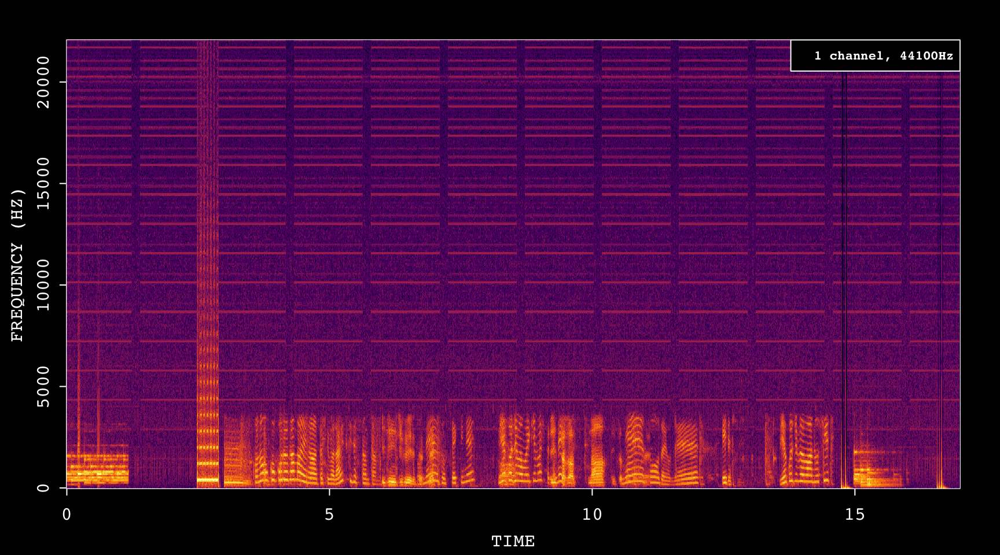

Recording Android Audio with Raspberry Pi
2024-01-30
Motivation
Raspberry PiからAndroidを繰り返し発信させ、音声を録音して音声品質を評価するための環境を構築する
ADBコマンドで発信する
call_by_adb.shADBコマンドが機種で対応していないものもあるため、機種は限定発信音を検出して録音を開始
incoming_record.py
library(av)
sample_wav<-"sample_wav/2023-07-14_19-36-31.wav"
html_tag_audio(file = (sample_wav))fft_data<-read_audio_fft(sample_wav)
plot(fft_data)

Figure 0.1: audio sample